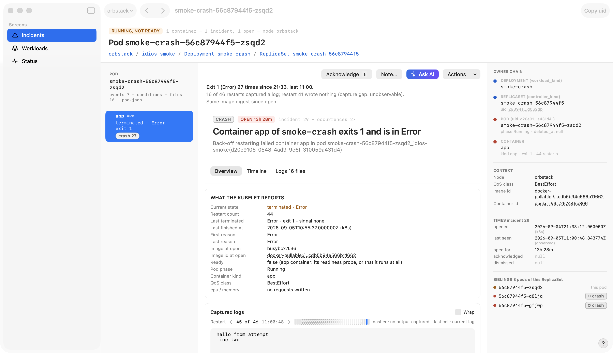

What each part of the screen holds, and what it tells you. Hover a lit region for its note.
The [?] at the window's bottom right is the control that opens this overlay.

opens this overlay
?
1Tag and counts - is the pod serving, how much is broken2Verdict - the answer in sentences3Kubelet facts - the evidence behind it4Captured logs - what the process said5Rail - owner, place, time, siblings